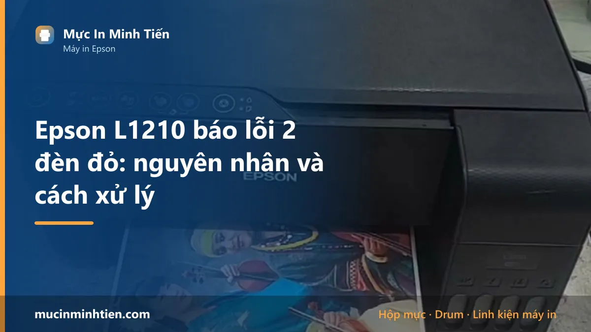
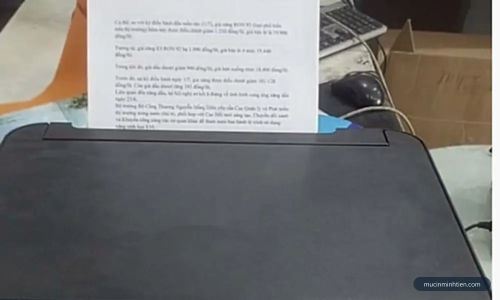
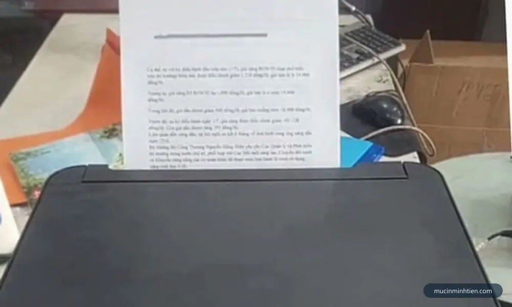
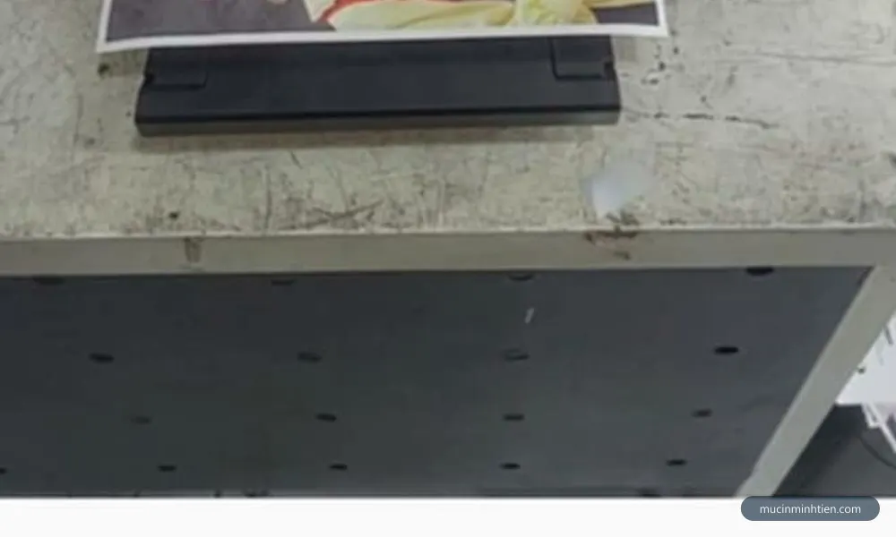
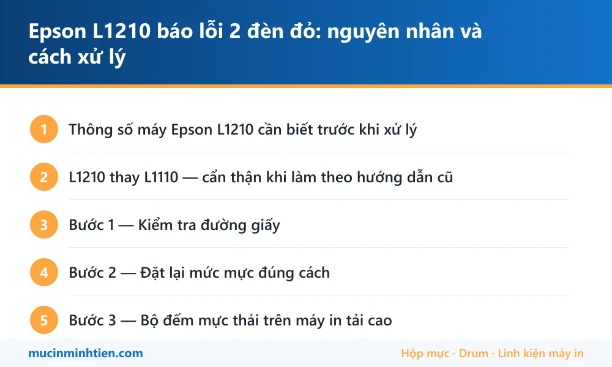

Epson L1210 báo lỗi 2 đèn đỏ: nguyên nhân và cách xử lý

Epson L1210 nháy 2 đèn đỏ chủ yếu do kẹt giấy, chưa xác nhận mức mực sau khi châm, hoặc tràn bộ đếm mực thải. Đây là đời thay thế cho L1110, vẫn là máy in đơn năng chỉ in nên ít bộ phận hỏng hơn dòng đa năng, phần lớn trường hợp tự xử lý được tại nhà.
Thông số máy Epson L1210 cần biết trước khi xử lý
Biết đúng máy mình đang dùng loại nào giúp khỏi mua nhầm vật tư và khỏi làm theo hướng dẫn của dòng khác.
| Hạng mục | Chi tiết |
|---|---|
| Kiểu máy | Đơn năng — chỉ in, không scan, không copy |
| Kết nối | Chỉ USB |
| Mực dùng | Epson 003 — dùng chung với L3110, L3210, L1110 |
| Vị trí trong dòng | Đời thay thế cho L1110, ra sau |
| Ưu điểm khi sửa | Ít bộ phận nhất trong dòng L nên dễ chẩn đoán |
L1210 thay L1110 — cẩn thận khi làm theo hướng dẫn cũ
Giống trường hợp L3210 thay L3110, đời máy mới giữ nguyên hệ mực nhưng thay đổi bố trí nút trên mặt máy.
Giữ nguyên: mực 003, cơ chế bộ đếm mực thải, nguyên lý đầu phun, cách châm mực vào bình.
Thay đổi: vị trí và ký hiệu nút bấm. Thao tác giữ nút để đặt lại mức mực không nằm cùng chỗ như trên L1110, nên làm theo video của máy cũ rất dễ bấm nhầm rồi tưởng máy hỏng.
Cách chắc chắn nhất, không phụ thuộc đời máy: dùng Epson Printer Utility trên máy tính. Giao diện phần mềm giống nhau ở mọi đời, không sợ nhầm nút.

Bước 1 — Kiểm tra đường giấy
L1210 chỉ có khay nạp phía sau, đường giấy ngắn và thẳng nên soi rất nhanh.
- Tắt máy, rút điện, đợi vài phút.
- Nhấc nắp trên, soi đèn từ khay sau xuống khe ra giấy trước.
- Kiểm tra kỹ vùng ngay dưới cụm đầu phun.
- Gỡ mảnh giấy theo chiều giấy đi, không kéo ngược.
- Lau con lăn cao su nếu thấy bám bụi giấy trắng.
Vì đường giấy ngắn, soi kỹ mà không thấy gì thì gần như chắc chắn nguyên nhân nằm ở chỗ khác — chuyển sang bước 2 thay vì tháo máy.

Bước 2 — Đặt lại mức mực đúng cách
Máy dòng L đếm mực bằng phần mềm chứ không đo thật trong bình. Châm đầy mà không báo cho máy biết thì nó vẫn tưởng đang cạn và tiếp tục nháy đèn.
- Nối máy với máy tính bằng cáp USB.
- Mở Epson Printer Utility hoặc phần mềm Epson đi kèm driver.
- Tìm mục đặt lại hoặc xác nhận mức mực sau khi châm.
- Xác nhận đã châm đầy từng màu, làm theo hướng dẫn trên màn hình.
- In thử một trang.
Không cài được phần mềm thì giữ nút giọt mực khoảng năm giây cho tới khi đèn phản hồi — nhưng nhìn kỹ ký hiệu trên nút của chính máy mình, đừng làm theo trí nhớ từ L1110.

Bước 3 — Bộ đếm mực thải trên máy in tải cao
L1210 là máy đơn năng, thường được mua để in nhiều — in hoá đơn, in tài liệu số lượng lớn. Tần suất in cao nghĩa là số lần vệ sinh đầu phun cũng nhiều, và bộ đếm mực thải đầy nhanh hơn người ta tưởng.
Khi máy báo Service Required, hai đèn nháy đồng thời không dứt sau khi đã loại trừ giấy và mực, đó là bộ đếm đã tới ngưỡng. Máy không hỏng — nó tự khoá để mực không tràn ra ngoài.
Xử lý đúng phải làm hai việc cùng lúc: đặt lại bộ đếm và vệ sinh hoặc thay tấm thấm mực thải. Phần mềm tải trên mạng chỉ làm được vế đầu, nên vài tuần sau mực sẽ rỉ ra đáy máy thật.
Bảng tra: dấu hiệu nào ứng với nguyên nhân nào
| Dấu hiệu | Nguyên nhân | Cách xử lý | Chi phí |
|---|---|---|---|
| Đèn giấy nháy, có tiếng kéo giấy | Kẹt giấy hoặc dị vật | Soi đèn, gỡ theo chiều giấy | 0 – 150.000 đ |
| Làm theo video L1110 mà máy không phản hồi | Bố trí nút khác trên đời mới | Dùng Epson Printer Utility | 0 đ |
| Châm mực xong vẫn báo cạn | Chưa đặt lại mức mực | Đặt lại qua phần mềm hoặc nút giọt mực | 0 đ |
| Hai đèn nháy đồng thời, báo Service Required | Tràn bộ đếm mực thải | Đặt lại bộ đếm + xử lý tấm thấm | từ 200.000 đ |
| Nozzle Check thiếu một dải màu | Tắc vòi phun | Head Cleaning tối đa 3 lần | 0 – 150.000 đ |
| Có mực rỉ ra đáy máy | Tấm thấm đã ngậm đầy | Thay tấm thấm ngay | Cần kiểm tra |
Vật tư cho Epson L1210 có sẵn tại kho 77 Bắc Hải, Phường Diên Hồng, TP.HCM — xem bảng giá 773 mã hoặc gọi 0915 510 203 kèm model máy.
Khi nào nên gọi kỹ thuật viên
- Đường giấy sạch, đã đặt lại mức mực mà đèn vẫn nháy
- Máy báo Service Required — xử lý cả bộ đếm lẫn tấm thấm
- Đã thấy mực rỉ ra đáy máy hoặc mặt bàn
- Head Cleaning ba lần vẫn thiếu màu
- Không cài được phần mềm Epson để đặt lại mức mực
Báo giá xử lý Epson L1210 tận nơi
| Hạng mục | Giá tham khảo |
|---|---|
| Kiểm tra, vệ sinh đường giấy | từ 100.000 đ |
| Vệ sinh đầu phun chuyên sâu | từ 150.000 đ |
| Đặt lại bộ đếm mực thải kèm vệ sinh tấm thấm | từ 200.000 đ |
| Cài driver và phần mềm Epson tận nơi | từ 100.000 đ |
| Châm mực 003 | từ 60.000 đ/màu |
Kỹ thuật viên kiểm tra và báo giá trước khi làm — xem cam kết ở dịch vụ sửa máy in tận nơi TP.HCM.
Cách phòng tránh tái phát
- Cài phần mềm Epson ngay khi mua máy — sau này đặt lại mức mực và chạy Nozzle Check đều chắc hơn bấm nút.
- Hạn chế Head Cleaning, mỗi lần chạy đẩy bộ đếm mực thải đầy thêm.
- In đều đặn, máy đơn năng hay bị bỏ quên và mực khô trong đầu phun.
- Xử lý sớm khi máy báo Service Required, đừng cố in thêm — tấm thấm ngậm càng nhiều càng khó cứu.
- Châm đúng mực 003, không pha trộn nhiều loại mực vào cùng bình.
